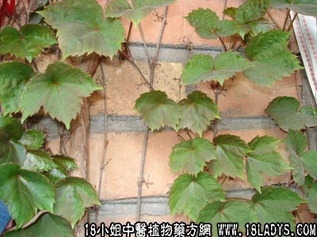

别名：巴山虎、下山虎。
植物名：小叶羊角藤。
生长环境：本品为扳援灌木，我国南部极常见的野生植物，路旁、山坡、旷地，都有生长。
分布：广东各地可见，以至亚洲热带地区亦有。
入药部分：根。
自采地点：山岗。
性味：性微凉，味甘。
功能：散瘀、止痛、解毒。
主治、用量和用法：1、劳伤苦伤：干根1～2两，加猪瘦肉，清水煎服；2、跌打，配伍用。
验方：（治跌打瘀肿方）：爬山虎1两、金牛根1两、血见愁5钱、红丝线5钱、清水四碗，煎成一碗服。
（方解）本方以爬山虎善散瘀患为君，血见愁去瘀生新为臣，红丝线凉血和血为佐，金牛根行气通络为使，对积瘀肿痛跌打患者用之有效。
（方歌）跌打挫伤爬山虎，红丝线挂金牛牯，散瘀消肿血见愁，煎服数剂愈疾善。